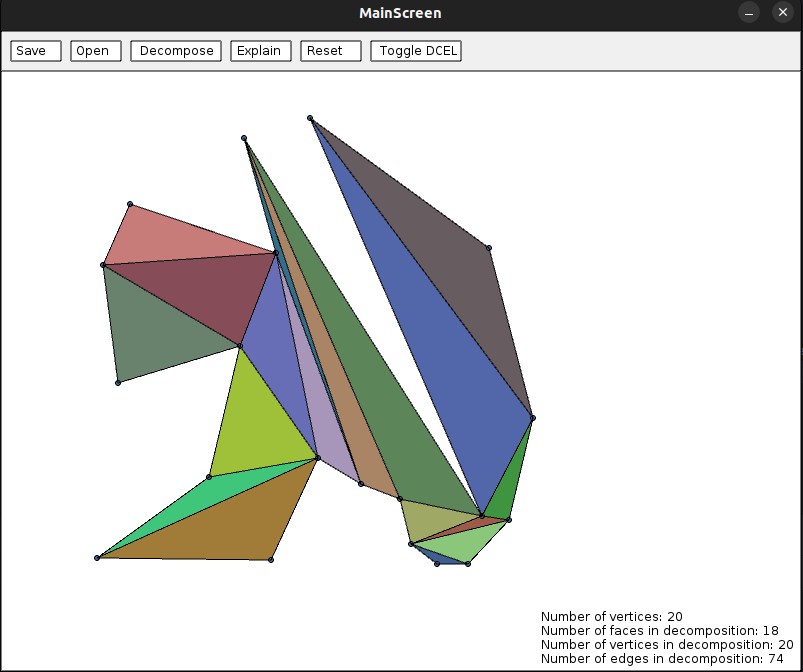

The goal of the project is to explore different algorithms for decomposing a simple polygon into convex subcomponents. For this project five different algorithms are attempted. For this, multiple stategies are examined. The first stategy is of not adding any extra points (called Steiner points). The algorithms that are attempted with this are simple triangulation and greedy decomposition. The second strategy is to allow adding adding extra points to ease the decomposition. For this, the Chazelle algorithm, slab decomposition and KD decomposition are going to be implemented.
To better be able to compare the performance of the different algorithms, a Minkovski sums algorithm will be implemented where its first step is to decompose the polygons on which the sum will be calculated. Reducing the amount of decomposition components will here result generally in better performance.
Here now follows a more thorough description of the different components of the application and its implemented algorithms.
Our implementation of triangulation is based on the linesweep algorithms seen in the course. The first part is to split a simple polygon into multiple Y-monotone polygons by adding carefuly choosen edges. The doubly connected edge list structure has been implemented to easily add edges and provide efficient way to represent the newly created polygons. At the end of the first part, the border of each face in the DCEL is a y-monotone polygon. Here is an example of result of our application at this stage:

Then the second part is spliting these polygons into triangles by using another linesweep algorithm with a stack. The result for the same polygon looks like this:
This decomposition uses the triangulation algorithm but stop as soon as there is no more reflex vertex in the polygon. To be done.